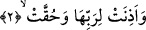
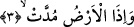

yarılacaktır. Samanyolu gökyüzünde uzunlamasına bembeyaz bir yoldur. Bu ismi alması
samanyoluna benzemesinden dolayıdır. İşte gök tam bu noktadan yarılacaktır. Adeta
burası gökyüzünün iki parçasını birbirine bitiştiren bir mafsal, eklem noktası gibidir.
2. Rabbine kulak verip boyun eğecek hale getirildiği zaman,
“Rabbine kulak verip, boyun eğecek hale getirildiği zaman” Yani Allah’ın kudreti
ve iradesi göğün yarılmasına taalluk ettiği zaman onun kudretinin etkisiyle boyun eğip
bu emre karşı durmadığı zaman... Bu boyun eğiş kendisine itâat edilen bir amirin emrine
son derece itâat eden memurun boyun eğmesi gibi olacaktır. Bu ifâde; mecaz-ı
mürselden dallanan bir istiâre-i temsiliyye kabilindendir. Biraz açacak olursak; işitme
ve kulak verme özelliği olan bir kimse hakkında “kulak verme” fiili kullanıldığında
bununla mecazen söylenen şeye uyma ve boyun eğme kasdedilir. Aynı fiil gök gibi
dinleme ve kabul etme özelliği olmayan bir nesne hakkında kullanılırsa ortaya istiâre-i
temsiliyye çıkar. Bu tıpkı “Ona ve yerküreye isteyerek veya istemeyerek gelin dedi.
İkisi de isteyerek geldik dediler” (Fussilet 41/11) âyet-i kerimesindeki ifâde gibidir.
Orada nasıl ki “isteyerek geldik” ifâdesi Allah Teâlâ’nın yoktan var etmesi ve benzersiz
yaratması noktasındaki kudretinin karşısında hiçbir engel olmaksızın nüfuzuna delalet
ediyorsa; okuduğumuz âyetteki “göğün rabbine boyun eğmesi” ifâdesi de aynı şekilde
göğün yarılma ve yok edilme karşısında hiçbir engel ve rablığına karşı herhangi bir
dokunma olmaksızın kudretinin nüfuzuna delalet etmektedir. Hem de ifâdede rab
kelimesi gök kelimesine izâfe edilerek “onun rabbi” denmektedir. İşte bu, hükmün
illetine (sebebine) işâret etmektedir. Bu boyun eğiş erbabu’l-hakaik denilen hakikate
ermiş kimseler nezdinde göğün diğer canlılarda olduğu gibi bir hayat ve idrakinin
olduğu şeklinde tefsir edilmiştir. Çünkü hiçbir nesne yoktur ki Allah’ın “el-Hayy”
isminin tecellisinden nasib olmamış olsun. Nitekim bu gerçek daha önce defalarca geçti.
Okuduğumuz âyette yer alan “hukkat” ifâdesiyle kasdedilen “o buna lâyıktır” demektir.
Yani gökyüzü Allah’ın emrini dinlemeye ve boyun eğmeye lâyıktır, demek olur. Zira gök
Allah Teâlâ tarafından yaratılmış ve onun Rablığı çizgisi içerisinde bulunmaktadır. Bir
başka ifâdeyle kendisi sâyesinde herşeyin meydana geldiği ve hiçbir meselenin geri
kalmadığı Allah’ın rabbani ve herşeye hakim kudreti karşısında göğün durumu bundan
ibarettir. Aslında “ve hukkat” cümlesinin daha öncesi üzerine atfedilmiş bir cümle değil
de, daha öncesinin mânâsını pekiştiren bir mu’teriza cümlesi olması uygun olurdu.